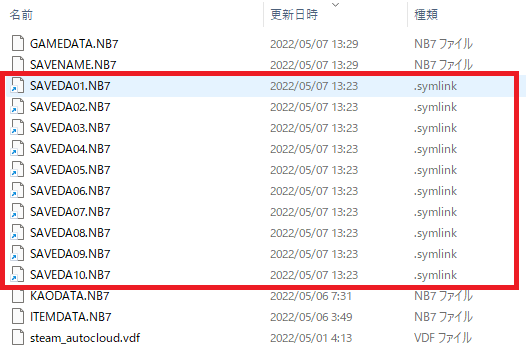

上記セーブデータをコピーしたり戻したりといった作業は煩わしいものです。
要は「C:\Users\%USERNAME%\Documents\*****\****」など深いフォルダにあるセーブデータが、
あたかも「将星録フォルダ」にも存在するかのようにPCに認識させればよいのです。
１つ以上セーブデータが存在する状態で、MakeSavedatSoftlink.bat ファイルを実行すると、
セーブデータのソフトリインクが「将星録フォルダ」に作成されます。

先述の「セーブデータエディタ」は、このソフトリンクがあれば、「将星録フォルダにセーブデータが存在する」と認識します。
そして実際に「セーブデータエディタ」が保存した際には、
C:\Users\%USERNAME%\Documents\Koei\35th\信長の野望・将星録 with パワーアップキット
内のセーブデータが更新されます。